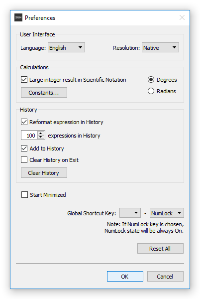

Preferences window can be open either by Menu - Preferences... or Ctrl-P shortcut key. This windows is locking, so the main window is unavailable for manipulations at the same time.
Two options are available to close Preferences window: accepting and refusing changes by OK and Cancel buttons, respectively.

Preferences window.
Language: change UI language by drop-down menu (the language is set according System Local at the First Start - English is default, if no language found).
Resolution: change UI resolution from Native to Double by drop-down menu (Double is recommended if screen resolution is UltraHD or higher).
Large integer result in Scientific Notation: uncheck if large integer result in natural representation (15013093754529657235677197216425...) is more suitable than scientific notation (1.5013093754529656e+68).
Constants: open Constants and Variables dialog, to create change or remove constants and variables (see Constants and Variables dialog).
Degrees / Radians: change angle units in trigonometry.
Reformat expression in History: SUM is formating by default all expressions in History - adding spaces around "+", "-", "/" operators and between arguments, removing extra spaces, and adding zeros omitted before floating point (i.e ".25").
Expressions in History: set maximum number of History items - default is 100, maximum is 250, 0 will clear up History and expressions will not be added (if actual number of items in History exceeding maximum, overrun items will be removed from the end).
Add to History: uncheck if don't want to add the following expressions to History (remaining items will not be affected).
Clear History on Exit: if checked, all History will be cleared up after Exit.
Clear History: clear up all History.
Start Minimized: check to start up silently, if SUM is starting with System (autostart should be set by system-specific tools, for example - copying program shortcut to Startup folder in Windows).
Global Shortcut Key: select system-wide Global Shortcut Key to activate (at any inactive state) and minimize SUM by keyboard, if there is neither NumLock key nor Numeric keypad on your keyboard, you should choose one of combinations with Ctrl and F2 - F12 keys (note: if NumLock key is chosen, NumLock state will be always On.).
Reset All: Reset all Preferences as well as user defined main window's size and position.